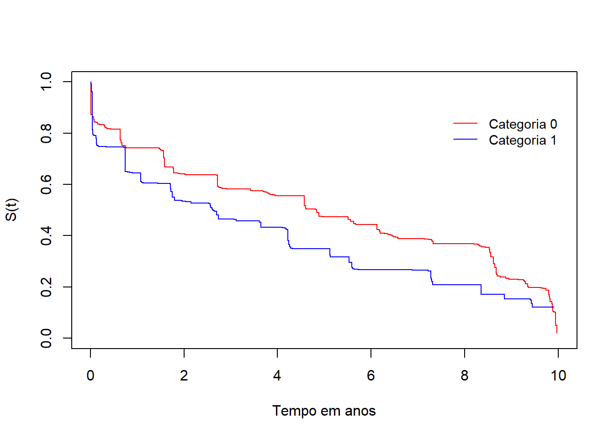

# Carregando os pacotes necessários
library(tidyverse) # Pacote para manipulação e visualização de dados
library(survival) # Pacote para análise de sobrevivência
library(icenReg) # Pacote para análise de sobrevivência com censura intervalarWarning! Translation still in proccess!
Análise de Sobrevivência com Censura Intervalar
O que é Análise de Sobrevivência?
A Análise de Sobrevivência é um conjunto de técnicas estatísticas utilizadas para modelar o tempo até a ocorrência de um evento de interesse. Esses eventos podem ser falhas em sistemas mecânicos, tempo até a recidiva de uma doença, ou até mesmo a duração de um contrato de serviço. O diferencial da Análise de Sobrevivência em relação a outras técnicas estatísticas é a presença de censura, que ocorre quando o evento de interesse não é completamente observado.
Censura intervalar
A censura intervalar ocorre quando o tempo exato do evento não é conhecido, mas sabe-se que ele aconteceu dentro de um intervalo de tempo. Isso é comum em estudos médicos, nos quais os pacientes são avaliados periodicamente e o evento pode ter ocorrido entre duas consultas. Modelos tradicionais de Análise de Sobrevivência, como Kaplan-Meier e modelos de riscos proporcionais de Cox, não são adequados para lidar com esse tipo de censura, sendo necessário utilizar abordagens específicas, como as curvas de Turnbull e a extensão do modelo de Cox para censura intervalar.
Passo a passo
Preparo do ambiente
Para realizar a análise, utilizamos o R e carregamos os pacotes necessários para manipulação de dados e modelagem estatística.
Obtenção dos dados sintéticos
Criamos um conjunto de dados sintético com 600 indivíduos e algumas variáveis de interesse, como uma variável categórica, uma variável contínua e o tempo até a ocorrência do evento de interesse. A construção dos dados leva em consideração a influência das variáveis na probabilidade de o evento ocorrer.
n <- 600 # Número de indivíduos na base de dados
# Número de observações por indivíduo, variando entre 2 e 5 observações
obs_por_individuo <- sample(2:5, n, replace = TRUE)
# Expandindo os IDs para refletir múltiplas observações por indivíduo
dados <- data.frame(
ID = rep(1:n, times = obs_por_individuo)
)
dados <- dados %>%
mutate(
# Variável categórica exemplo (var_cat)
var_cat = rep(sample(c(0, 1), n, replace = TRUE), times = obs_por_individuo),
# Variável contínua exemplo (var_cont), que possui dependência da variável categórica
var_cont = unlist(lapply(var_cat, function(s) {
if (s == 1) {
sample(5500:8000, 1) # Valor para 'var_cat' igual a 1
} else {
sample(1800:3500, 1) # Valor para 'var_cat' igual a 0
}
})),
# Idade atual dos indivíduos, gerada aleatoriamente entre 0 e 10 anos
idade_atual = unlist(lapply(obs_por_individuo, function(x) runif(x, min = 0, max = 10))),
# Risco do desfecho com base em 'var_cat' e 'var_cont'
risco_desfecho = 0.2 + var_cat * (-0.4) + var_cont * 0.0001
)
# Gerando a variável 'desfecho' a partir do risco, usando 0.5 como valor de corte
dados = dados %>%
mutate(desfecho = ifelse(risco_desfecho>0.5,1,0)) %>%
select(-risco_desfecho) # remove o riscoTransformação em dados de sobrevivência
Os dados brutos precisam ser transformados em um formato adequado para análise de sobrevivência com censura intervalar. Criamos as variáveis left (limite inferior do tempo do evento) e right (limite superior do tempo do evento), bem como a variável de censura (cens), que indica se o evento foi observado (1) ou censurado (0).
df_surv = dados %>%
group_by(ID) %>%
summarise(
left = ifelse(
any(desfecho == 1),
max(idade_atual[idade_atual < min(idade_atual[desfecho == 1], na.rm = T)
& desfecho == 0], na.rm = T),
max(idade_atual) # Caso não tenha ocorrência do evento, a maior idade é registrada
),
right = ifelse(any(desfecho == 1),
min(idade_atual[desfecho == 1], na.rm = T),
NA), # Caso o evento não tenha ocorrido, substitui por NA
cens = ifelse(any(desfecho == 1), 1, 0), # Indica se o evento foi observado (1) ou censurado (0)
var_cat = first(var_cat), # Variáveis de covariáveis para análise
var_cont = first(var_cont)
) %>%
ungroup() %>%
mutate(left = ifelse(left < 0, 0, left)) # Garante que 'left' não seja negativoCurvas de Turnbull
As curvas de Turnbull são uma extensão do estimador de Kaplan-Meier para dados com censura intervalar. Implementamos uma função para calcular o vetor de tempos ótimos (tau), estimar a função de sobrevivência inicial e iterativamente atualizar as probabilidades de sobrevivência até a convergência do algoritmo.
Comparamos as curvas de sobrevivência entre dois grupos da variável categórica para verificar diferenças na distribuição do tempo até o evento.
# Função para criar o vetor de tempos (tau) a partir dos intervalos censurados
# O uso de digitos de arrendondamento é contribuição de Sofia Aguiar
# a fim de evitar erros em bases meiores que 10 mil
cria.tau <- function(data, digits = 6) {
l <- data$left
r <- data$right
# Arredonda os valores para evitar pequenas diferenças numéricas
l <- round(l, digits = digits)
r <- round(r, digits = digits)
tau <- sort(unique(c(l, r[is.finite(r)]))) # Combina os tempos de censura
return(tau)
}
# Função para inicializar a função de sobrevivência com base no vetor tau
S.ini <- function(tau){
m<-length(tau)
ekm<-survfit(Surv(tau[1:m-1],rep(1,m-1))~1)
So<-c(1,ekm$surv)
p <- -diff(So)
return(p)
}
# Função para construir a matriz A de intervalos de censura
cria.A <- function(data,tau){
tau12 <- cbind(tau[-length(tau)],tau[-1]) # Cria os intervalos [tau[i], tau[i+1]]
interv <- function(x,inf,sup) ifelse(x[1]>=inf & x[2]<=sup,1,0)
A <- apply(tau12,1,interv,inf=data$left,sup=data$right)
id.lin.zero <- which(apply(A==0, 1, all)) # Matriz de censura
if(length(id.lin.zero)>0) A <- A[-id.lin.zero, ] # Filtra intervalos não observados
return(A)
}
# Função de Turnbull, que realiza a estimação iterativa da função de sobrevivência
Turnbull <- function(p, A, data, eps=1e-3,
iter.max=200, verbose=FALSE){
n<-nrow(A)
m<-ncol(A)
Q<-matrix(1,m)
iter <- 0
repeat {
iter <- iter + 1
diff<- (Q-p)
maxdiff<-max(abs(as.vector(diff))) # Diferença máxima entre iterações
if (verbose)
print(maxdiff)
if (maxdiff<eps | iter>=iter.max)
break
Q<-p
C<-A%*%p
p<-p*((t(A)%*%(1/C))/n) # Atualiza as estimativas de probabilidade
}
cat("Iterations = ", iter,"\n")
cat("Max difference = ", maxdiff,"\n")
cat("Convergence criteria: Max difference < 1e-3","\n")
dimnames(p)<-list(NULL,c("P Estimate"))
surv<-round(c(1,1-cumsum(p)),digits=5)
right <- data$right
if(any(!(is.finite(right)))){
t <- max(right[is.finite(right)])
return(list(time=tau[tau<t],surv=surv[tau<t]))
}
else
return(list(time=tau,surv=surv)) # Retorna a função de sobrevivência
}# Estimação da função de sobrevivência para 'var_cat' igual a 0 e 1
dat1 = df_surv[df_surv$var_cat == 0,]
dat1$right[is.na(dat1$right)] = Inf
tau = cria.tau(dat1)
p = S.ini(tau = tau)
A = cria.A(data = dat1, tau = tau)
tb1 = Turnbull(p, A, dat1)Iterations = 47
Max difference = 0.0009869879
Convergence criteria: Max difference < 1e-3 dat1 = df_surv[df_surv$var_cat == 1,]
dat1$right[is.na(dat1$right)] = Inf
tau = cria.tau(dat1)
p = S.ini(tau = tau)
A = cria.A(data = dat1, tau = tau)
tb2 = Turnbull(p, A, dat1)Iterations = 83
Max difference = 0.0009990949
Convergence criteria: Max difference < 1e-3 # Visualização das funções de sobrevivência para os dois grupos
par(mfrow = c(1, 1))
plot(tb1$time, tb1$surv, col = "red", type = "s", ylim = c(0, 1), xlim = c(0, 10),
xlab = "Tempo em anos", ylab = "S(t)")
lines(tb2$time, tb2$surv, col = "blue", type = "s")
legend(7.5, 0.9, lty = 1, col = c("red", "blue"), c("Categoria 0", "Categoria 1"),
bty = "n", cex = 0.9)
Extensão do modelo de cox para censura intervalar
O modelo de riscos proporcionais de Cox é amplamente utilizado em análise de sobrevivência, mas precisa ser adaptado para lidar com censura intervalar. Utilizamos o pacote icenReg para estimar os coeficientes do modelo de Cox estendido para censura intervalar. Ajustamos modelos univariados e multivariados para identificar quais variáveis estão associadas ao tempo até o evento.
m = max(summary(df_surv$right)) # Máximo dos valores de censura
li = df_surv$left
ui = ifelse(is.na(df_surv$right), m + 1000, df_surv$right) # Ajuste para censura direita
# Ajuste do modelo de Cox para a variável categórica
fit1 = ic_sp(cbind(li, ui) ~ var_cat, model = 'ph', bs_samples = 100, data = df_surv)
summary(fit1)
Model: Cox PH
Dependency structure assumed: Independence
Baseline: semi-parametric
Call: ic_sp(formula = cbind(li, ui) ~ var_cat, data = df_surv, model = "ph",
bs_samples = 100)
Estimate Exp(Est) Std.Error z-value p
var_cat 0.3317 1.393 0.09634 3.443 0.0005751
final llk = -905.6817
Iterations = 52
Bootstrap Samples = 100 # Ajuste do modelo de Cox para a variável contínua
fit2 = ic_sp(cbind(li, ui) ~ var_cont, model = 'ph', bs_samples = 100, data = df_surv)
summary(fit2)
Model: Cox PH
Dependency structure assumed: Independence
Baseline: semi-parametric
Call: ic_sp(formula = cbind(li, ui) ~ var_cont, data = df_surv, model = "ph",
bs_samples = 100)
Estimate Exp(Est) Std.Error z-value p
var_cont 0.0001384 1 1.912e-05 7.241 4.468e-13
final llk = -893.677
Iterations = 50
Bootstrap Samples = 100 # Seleção das variáveis com p-valor < 0,25 para a análise multivariada
fit3 = ic_sp(cbind(li, ui) ~ var_cat + var_cont, model = 'ph', bs_samples = 100, data = df_surv)
summary(fit3)
Model: Cox PH
Dependency structure assumed: Independence
Baseline: semi-parametric
Call: ic_sp(formula = cbind(li, ui) ~ var_cat + var_cont, data = df_surv,
model = "ph", bs_samples = 100)
Estimate Exp(Est) Std.Error z-value p
var_cat -3.2240000 0.03981 0.4413000 -7.306 2.758e-13
var_cont 0.0008674 1.00100 0.0001024 8.474 0.000e+00
final llk = -855.8689
Iterations = 31
Bootstrap Samples = 100 Seleção de variáveis
Para selecionar as variáveis mais relevantes, utilizamos um procedimento iterativo baseado na log-verossimilhança. Variáveis com baixa contribuição para o modelo podem ser removidas para simplificar a interpretação dos resultados e reduzir o sobreajuste.
step_icph <- function(model, data) {
vars <- attr(terms(model$formula), "term.labels") # Variáveis do modelo
current_model <- model
best_llk <- current_model$llk # Log-verossimilhança inicial
# Processo iterativo de remoção de variáveis com base na log-verossimilhança
for (var in vars) {
formula_new <- as.formula(paste("cbind(li, ui) ~",
paste(setdiff(vars, var), collapse = " + ")))
model_new <- ic_sp(formula_new, model = "ph", bs_samples = 100, data = data)
new_llk <- model_new$llk # Log-verossimilhança do novo modelo
# Diagnóstico e atualização do modelo
if (new_llk > best_llk) {
best_llk <- new_llk
current_model <- model_new
vars <- setdiff(vars, var)
}
}
return(current_model) # Retorna o modelo final
}Conclusão
A análise de sobrevivência com censura intervalar permite estudar fenômenos nos quais o tempo exato do evento é desconhecido, mas delimitado dentro de um intervalo. O uso das curvas de Turnbull e da extensão do modelo de Cox para censura intervalar são ferramentas fundamentais para extrair informações valiosas desses dados. A seleção cuidadosa de variáveis melhora a precisão dos modelos e ajuda a compreender os fatores que influenciam o tempo até o evento de interesse.
Referências
ANDERSON-BERGMAN, C. icenReg: Regression models for interval censored data in R. Versão 2.0. Disponível em: https://cran.r-project.org/package=icenReg. Acesso em: 19 dez. 2024
COLOSIMO, E. A.; GIOLO, S. R. Análise de sobrevivência aplicada. Blücher, 2024.
SUN, Y. Survival data analysis with interval-censored data. Statistics in Medicine, v. 25, p. 3563-3578, 2006.
THERNEAU, T. M. survival: Survival Analysis, Including Penalised Likelihood (versão 3.4-0). 2023. Disponível em: https://cran.r-project.org/web/packages/survival/index.html. Acesso em: 16 dez. 2024.
TURNBULL, B. W. The empirical distribution function with arbitrarily grouped, censored and truncated data. Journal of the Royal Statistical Society, v. 38, p. 290-295, 1976.